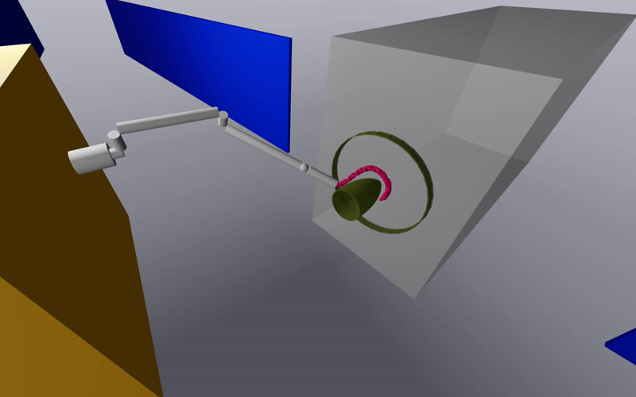

Graduate student researcher, Carnegie Mellon University, funded by SURIAug 2025 – present
On-Orbit Manipulation
I work on every stage of our CMU team’s pipeline for capturing a tumbling satellite: I extended the INSAT planner to the satellite’s moving grasp point, raising rendezvous success from 80% to 99% over 200 randomized trials; I built the grasp, base, and arm controllers that stop its spin; and I analyzed grasps for Snaker, our snake robot, which tolerates up to five times more misalignment than a standard gripper. With two teammates, I’m also building an early tendon-driven Snaker that needs far fewer motors, and showed in SOFA that tapering its spine keeps its loops even.
Tools
Skills